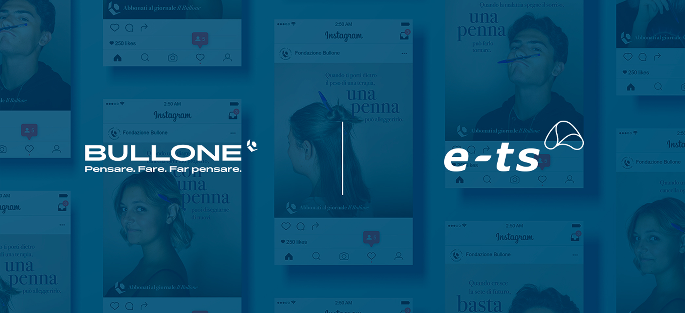
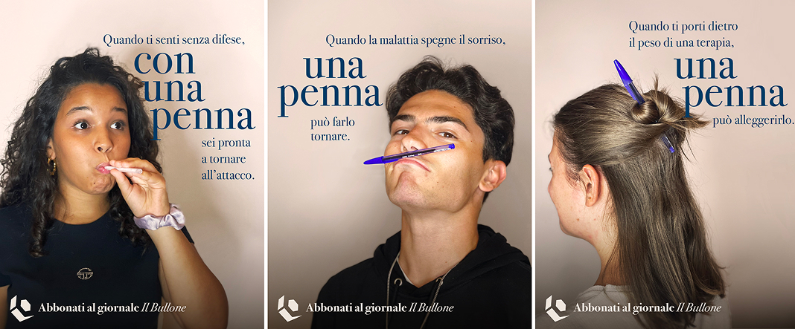
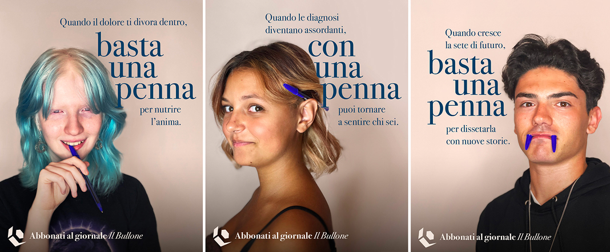

<!DOCTYPE html>
<html lang="it">
<head>
    <meta charset="UTF-8">
    <meta name="viewport" content="width=device-width, initial-scale=1.0">
    <title>Bullone | A-Tono ETS</title>
    <link rel="stylesheet" href="css/style.css?v=1789144465">
    <style>
        .project-hero {
            position: relative;
            background-color: #e0e0e0;
            min-height: 50vh;
            display: flex;
            align-items: center;
            justify-content: center;
            color: white;
        }
        .project-hero::before {
            content: '';
            position: absolute;
            top:0; left:0; right:0; bottom:0;
            background: rgba(23, 44, 74, 0.7);
            z-index: 1;
        }
        .project-hero-content {
            position: relative;
            z-index: 2;
            display: flex;
            align-items: center;
            gap: 2rem;
            width: 100%;
            max-width: 800px;
            justify-content: space-between;
        }
        .project-hero-content img {
            max-height: 80px;
        }
        .separator {
            width: 2px;
            height: 100px;
            background: white;
        }
        .image-gallery-3 {
            display: grid;
            grid-template-columns: repeat(3, 1fr);
            gap: 1rem;
            margin: 4rem 0;
        }
        .image-gallery-3 .placeholder-img {
            width: 100%;
            aspect-ratio: 1 / 1;
            background-color: #f0f0f0;
            display: flex;
            align-items: center;
            justify-content: center;
            color: #999;
            font-size: 0.9rem;
        }
        .main-content {
            font-size: 1rem;
            line-height: 1.8;
            max-width: 900px;
            margin: 0 auto;
        }
        .main-content h3 {
            color: var(--color-dark-blue);
            font-weight: 600;
            font-size: 1.2rem;
            margin-top: 2rem;
        }
    </style>
</head>
<body>
    <nav>
        <div class="logo">
            
        </div>
        <div class="menu-toggle">&#9776;</div>
        <ul class="nav-links">
            <li><a href="index.html">HOME</a></li>
            <li><a href="chi-siamo.html">CHI SIAMO</a></li>
            <li><a href="progetti.html" class="active">PROGETTI</a></li>
            <li><a href="sostienici.html">SOSTIENICI</a></li>
            <li><a href="contatti.html">CONTATTI</a></li>
        </ul>
    </nav>

    

    
    
    
    
    
    
    
    
    
    <main>
        <header style="width: 100%; position: relative;">
            
        </header>

        <section class="flex-section text-left" style="background: white; margin-top: 4rem; max-width: 1500px; margin-left: auto; margin-right: auto; padding: 0 5% 8rem 5%; color: var(--color-dark-blue); align-items: flex-start;">
            <div style="flex: 1; padding-right: 2rem;">
                <div class="section-header" style="margin-bottom: 0;">
                    <h2 style="font-weight: 300; font-size: 2.5rem; letter-spacing: 1px; color: var(--color-text); margin:0;">Fondazione</h2>
                    <h2 style="font-weight: 700; font-size: 4rem; letter-spacing: 2px; color: var(--color-light-blue); margin-top: 10px; border-bottom: 2px solid var(--color-text); padding-bottom: 10px; display: inline-block; margin-bottom: 0;">IL BULLONE</h2>
                </div>
            </div>
            <div style="flex: 1; display: flex; flex-direction: column; justify-content: flex-start; font-size: 1.1rem; color: var(--color-text); margin-top: 8rem;">
                <p style="margin: 0 0 10px 0; font-weight: 300; line-height: 1.8; max-width: 700px;">
                    Ci sono progetti che ci ricordano perché facciamo questo mestiere. Collaborare con <strong style="color: var(--color-light-blue); font-weight: 700;">Fondazione Il Bullone</strong> è uno di questi. Con loro abbiamo ideato e lanciato la nuova campagna digital di raccolta fondi individui della Fondazione. Un progetto che parla di <strong style="color: var(--color-light-blue); font-weight: 700;">rinascita</strong>, coraggio e comunicazione come strumento di cambiamento reale.
                </p>
            </div>
        </section>

        <section style="max-width: 1200px; margin: 0 auto; padding: 0 5%;">
            
            <div style="margin-bottom: 3rem; margin-top: 2rem;">
                <h3 style="color: var(--color-light-blue); font-size: 2rem; font-weight: 700; margin-bottom: 1rem;">La penna come sibolo di rinascita</h3>
                <p style="color: var(--color-text); font-size: 1.1rem; line-height: 1.8;">Per i giovani della Fondazione - i <strong style="color: var(--color-light-blue); font-weight: 700;">B.Livers</strong> - la scrittura è un atto catartico: raccontarsi diventa il primo passo per riconoscersi di nuovo come persone, e non solo come pazienti o ex-malati.<br>La campagna mostra “gli effetti” che una penna può avere: alleggerire, far dimenticare la malattia e restituire la voglia di mettersi in gioco.Protagonisti sono cinque giovani redattori del giornale Il Bullone, che con le loro parole ci invitano a un gesto concreto: abbonarci o donare per permettere ad altri ragazzi di intraprendere lo stesso percorso.<br>“Abbiamo scelto di raccontare la leggerezza ritrovata,” spiega Sergio Müller, Chief Communication Officer di A-Tono. “Cinque giovani e una penna, che diventa protagonista di piccoli momenti in cui si riscoprono come individui e non più solo come malati.</p>
            </div>
            
            </section>
            <div style="margin-bottom: 6rem; margin-top: 6rem; width: 100%; display: flex; justify-content: flex-end;">
                
            </div>
            <section style="max-width: 1200px; margin: 0 auto; padding: 0 5%; color: var(--color-text);">
            
            <div style="margin-bottom: 3rem; margin-top: 2rem;">
                <h3 style="color: var(--color-light-blue); font-size: 2rem; font-weight: 700; margin-bottom: 1rem;">Una strategia digital-first per amplificare il valore</h3>
                <p style="color: var(--color-text); font-size: 1.1rem; line-height: 1.8;">La campagna è stata pensata con un approccio <strong style="color: var(--color-light-blue); font-weight: 700;">digital-first</strong>, ottimizzando ogni euro investito per massimizzare impatto e conversione. La <strong style="color: var(--color-light-blue); font-weight: 700;">strategia media e i contenuti</strong> sono stati progettati per parlare alle persone giuste, nel modo più empatico, diretto e sostenibile possibile.<br>“La collaborazione con <strong style="color: var(--color-light-blue); font-weight: 700;">A-Tono ETS</strong> ci permette di amplificare la voce dei nostri ragazzi e il valore del nostro modello,” afferma Bill Niada, fondatore e presidente di <strong style="color: var(--color-light-blue); font-weight: 700;">Fondazione Il Bullone</strong>. “Crediamo che questa campagna, potente nella sua autenticità e mirata nella strategia digital, ci aiuterà a raggiungere nuovi sostenitori indispensabili per garantire un futuro ai giovani che hanno affrontato esperienze di malattia grave.</p>
            </div>
            
            </section>
            <div style="margin-bottom: 6rem; margin-top: 6rem; width: 100%; display: flex; justify-content: flex-start;">
                
            </div>
            <section style="max-width: 1200px; margin: 0 auto; padding: 0 5%; color: var(--color-text);">
            
            <div style="margin-bottom: 3rem; margin-top: 2rem;">
                <h3 style="color: var(--color-light-blue); font-size: 2rem; font-weight: 700; margin-bottom: 1rem;">Restituire valore alla società attraverso la comunicazione</h3>
                <p style="color: var(--color-text); font-size: 1.1rem; line-height: 1.8;">Per <strong style="color: var(--color-light-blue); font-weight: 700;">A-Tono ETS</strong>, questo progetto è molto più di una campagna: è un modo per restituire valore alla società, mettendo <strong style="color: var(--color-light-blue); font-weight: 700;">creatività, competenza e tecnologia</strong> al servizio di chi costruisce futuro e speranza.<br>“Siamo onorati di affiancare <strong style="color: var(--color-light-blue); font-weight: 700;">Fondazione Il Bullone</strong> in questa sfida,” racconta Anastasia Granato, presidentessa di <strong style="color: var(--color-light-blue); font-weight: 700;">A-Tono ETS</strong>. “Il Bullone non è solo un giornale, ma un vero laboratorio di <strong style="color: var(--color-light-blue); font-weight: 700;">rinascita</strong>. Il nostro obiettivo è stato tradurre la potenza emotiva di queste storie in una campagna digital efficace, capace di generare un impatto tangibile sulla vita dei <strong style="color: var(--color-light-blue); font-weight: 700;">B.Livers</strong>.”</p>
            </div>
            
            <div style="text-align: center; margin: 6rem 0 8rem 0;">
                <a href="progetti.html" class="btn-primary" style="background-color: var(--color-light-blue); color: white; padding: 15px 40px; text-decoration: none; font-weight: bold; font-size: 1.2rem; border-radius: 30px; text-transform: uppercase;">Torna ai progetti</a>
            </div>
        </section>
    </main>
    
    
    
    
    
    
    
    
    

    <footer>
        <div class="footer-content">
            <div class="footer-col">
                <h4 style="color: var(--color-light-blue); font-size: 1.1rem; text-transform: uppercase; margin-bottom: 8px;">Hai bisogno di aiuto?</h4>
                <p style="margin-top: 0;"><a href="contatti.html" style="color: inherit; text-decoration: none; font-weight: bold; font-size: 1.2rem; border-bottom: 2px solid currentColor;">Contattaci</a></p>
            </div>
            <div class="footer-col"><h4>MILANO</h4><p>Corso Buenos Aires, 77</p></div>
            <div class="footer-col"><h4>A-Tono E.T.S.</h4><p>ets.a-tono.com</p></div>
            <div class="footer-col"><h4>Codice Fiscale</h4><p>97737800157</p></div>
            <div class="footer-logo"></div>
        </div>
        <div class="footer-bottom">A-Tono E.T.S. - Ente del terzo settore - Codice Fiscale 97737800157</div>
    </footer>
    <script src="js/main.js"></script>
</body>
</html>